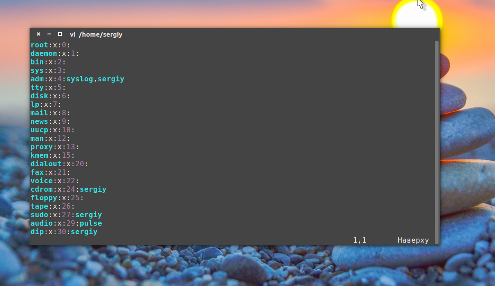
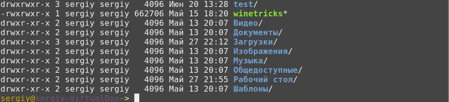
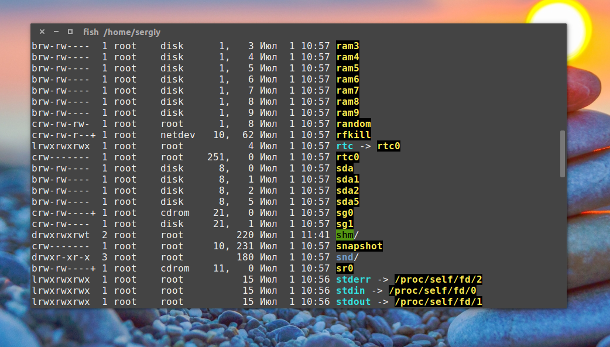
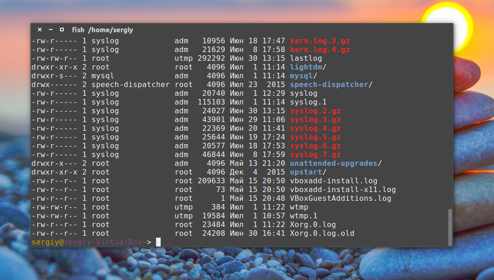
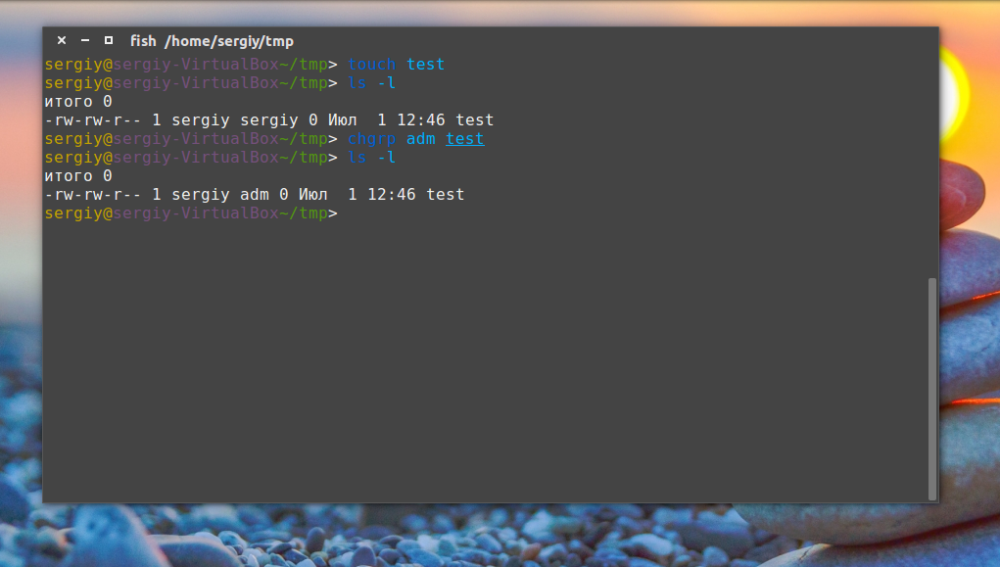
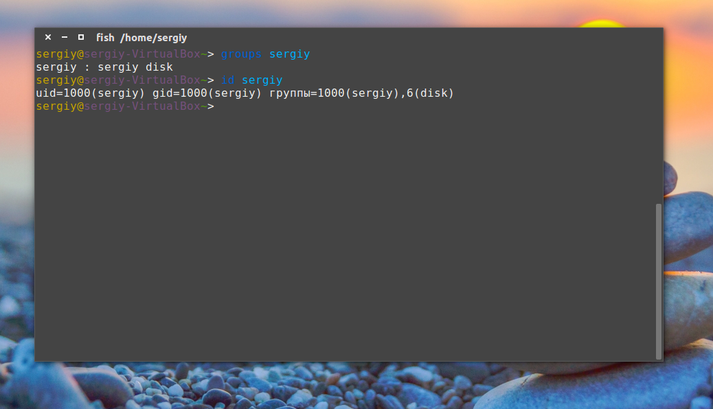

как подключться к группе в Ubuntu
Группы пользователей Linux
Система Обновлено: 30 сентября, 2020 16 admin
Основа распределения прав доступа в операционной системе Linux лежит на понятии пользователь. Пользователю-владельцу файла выдаются определенные полномочия для работы с ним, а именно на чтение, запись и выполнение. Также отдельно устанавливаются полномочия на чтение, запись и выполнение для всех остальных пользователей. Поскольку в Linux все есть файлом, то такая система позволяет регулировать доступ к любому действию в этой операционной системе с помощью установки прав доступа на файлы. Но еще при создании Linux, разработчики поняли, что этого явно недостаточно.
Поэтому и были придуманы группы пользователей. Пользователи могут объединяться в группы, чтобы уже группам выдавать нужные полномочия на доступ к тем или иным файлам, а соответственно и действиям. В этой статье мы рассмотрим группы пользователей в Linux, рассмотрим зачем они нужны, как добавить пользователя в группу и управлять группами.
Как я уже сказал группы в Linux появились еще в самом начале разработки этой операционной системы. Они были разработаны для того, чтобы расширить возможности управления правами. Разберем небольшой пример, возьмем организацию в которой есть только один компьютер, у нас есть администраторы и пользователи. У каждого человека свой аккаунт на нашем компьютере. Администраторы могут настраивать систему, пользователям же лучше не давать воли, чтобы что-то не сломали. Поэтому администраторы объединяются в группу admin, и ей дается доступ ко всему оборудованию, реально же ко всем файлам в каталоге dev, а пользователи, объеденные в группу users, и этой группе дается возможность читать и записывать файлы в общий каталог, с помощью которого они могут обмениваться результатами своей работы. Мы могли бы назначать права для каждого пользователя отдельно разрешая ему доступ к тому или иному файлу, но это слишком неудобно. Поэтому и были придуманы группы. Говорите, да ничего, можно назначить? Ну а теперь представьте что наши пользователи - это процессы. Вот тут вся краса групп выходит на передний план, группы используются не столько для обеспечения доступа для пользователей, сколько для управления правами программ, особенно их доступом к оборудованию. Для сервисов создаются отдельные группы и пользователь, от имени которого запущен он, сервис может состоять в нескольких группах, что обеспечивает ему доступ к определенным ресурсам.
А теперь давайте рассмотрим как посмотреть группы linux.
Все группы, созданные в системе, находятся в файле /etc/group. Посмотрев содержимое этого файла, вы можете узнать список групп linux, которые уже есть в вашей системе. И вы будете удивлены.
vi /etc/group

Кроме стандартных root и users, здесь есть еще пару десятков групп. Это группы, созданные программами, для управления доступом этих программ к общим ресурсам. Каждая группа разрешает чтение или запись определенного файла или каталога системы, тем самым регулируя полномочия пользователя, а следовательно, и процесса, запущенного от этого пользователя. Здесь можно считать, что пользователь - это одно и то же что процесс, потому что у процесса все полномочия пользователя, от которого он запущен.
Давайте подробнее рассмотрим каждую из групп, чтобы лучше понимать зачем они нужны:
Теперь, когда вы знаете зачем использовать группы в linux и какие они есть по умолчанию, рассмотрим управление группами LInux.
Управлять группами можно и с помощью графического интерфейса. В KDE есть программа Kuser специально предназначенная для этого, в Gnome это выполняется с помощью настроек системы. Кроме того, в популярных дистрибутивах есть отдельные инструменты, такие как YaST в OpenSUSE или Настройки Ubuntu. Но с графическим интерфейсом я думаю вы разберетесь. А мы рассмотрим управление группами linux через терминал. Сначала разберемся с файлами, а уже потом с пользователями.
При создании файла ему назначается основная группа пользователя который его создал. Это просто например:
ls -l ~/

Здесь вы можете видеть, что владелец всех папок sergiy и группа тоже sergiy. Правильно, так как эти пользователи были созданы мной. Но давайте пойдем дальше:
ls -l /dev/

Здесь мы видим что дисковым устройствам sd* назначена группа disk, а это все значит, что пользователь, состоящий в этой группе, может получить к ним доступ. Или еще пример:
ls -l /var/log/

Все как мы рассматривали в предыдущем пункте. Но эти группы могут быть не только установлены системой, но и вы сами вручную можете менять группы файлов для этого есть команда chgrp:
chgrp имя_группы имя_файла
Например создадим файл test:
touch test
И изменим для него группу:
chgrp adm test

Теперь этот файл смогут прочитать все пользователи из группы adm.
Если вы хотите создать группу linux, это можно сделать командой newgrp:
sudo groupadd test
С пользователями ситуация немного сложнее. Пользователь имеет основную группу, она указывается при создании, а также несколько дополнительных. Основная группа отличается от обычных тем, что все файлы в домашнем каталоге пользователя имеют эту группу, и при ее смене, группа этих каталогов тоже поменяется. Также именно эту группу получают все файлы созданные пользователем. Дополнительные группы нужны, чтобы мы могли разрешить пользователям доступ к разным ресурсам добавив его в эти группы в linux.
Управление группами Linux для пользователя выполняется с помощью команды usermod. Рассмотрим ее синтаксис и опции:
$ usermod опции имя_пользователя
Добавить пользователя в группу можно командой usermod:
sudo usermod -G -a имя_группы имя_пользователя
Можно добавить пользователя в группу linux временно, командой newgrp. Откроется новая оболочка, и в ней пользователь будет иметь нужные полномочия, но после закрытия все вернется как было:
sudo newgrp имя_группы
Для примера давайте добавим нашего пользователя в группу disk, чтобы иметь прямой доступ к жестким дискам без команды sudo:
sudo usermod -G -a disk sergiy
Теперь вы можете монтировать диски без команды sudo:
mount /dev/sda1 /mnt
Посмотреть группы linux, в которых состоит пользователь можно командой:
groups

Также можно использовать команду id. В первом случае мы просто видим список групп linux, во втором дополнительно указанны id группы и пользователя. Чтобы включить пользователя в группу Linux, для основной группы используется опция -g:
sudo usermod -g test sergiy
Теперь все каталоги в домашней папке пользователя имеют группу test. Удалить пользователя из группы в linux можно той же командой с опцией R:
sudo usermod -R группа пользователь
Ну и наконец, удалить группу Linux можно командой:
Как видите, группы пользователей Linux не такое уж сложное дело. Вы можете в несколько команд добавить пользователя в группу linux или дать ему полномочия на доступ к определенным ресурсам. Если вы надумали изменять группы для системных устройств, тут все не так просто, но в этом вопросе вам поможет статья про правила udev в linux. Теперь управление группами Linux вам не кажется таким сложным. Если остались вопросы, пишите в комментариях!